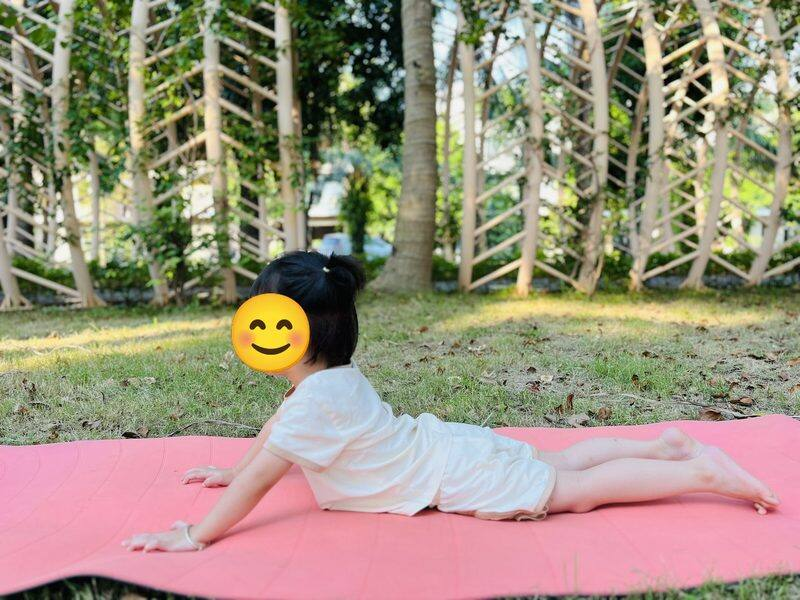

Chủ đề 33 · Xứ băng giá Bắc Cực
Chim Cánh Cụt muốn bay
🌟 Bài học trong câu chuyện
Giới luật yoga: Santosha – Vui với những gì mình có. Bé biết hài lòng, mỉm cười với điều mình đang có.
Kỹ năng sống: Yêu điểm mạnh của mình.
1. Khởi động (2 phút)
Cả lớp ngồi xếp bằng thành vòng tròn. Cùng thở 3 hơi thở bông hoa: hít vào bằng mũi như ngửi hoa, thở ra bằng miệng thật chậm. Chắp tay trước ngực và chào nhau: “Namaste, chào các bạn!”
2. Kể chuyện và tập (10 phút)
Ở Bắc Cực lạnh giá, Chim Cánh Cụt Pip nhìn đàn chim bay qua và buồn: "Sao mình có cánh mà không bay được?"
-
❄️1
Chim cánh cụt
🧘 Tư thế Chim cánh cụt đi (Penguin Walk)
Pip đi lạch bạch trên băng, nhìn trời buồn bã.
Cách làm: Đứng thẳng, tay ép sát người, bàn tay vểnh ra, bước chân nhỏ lạch bạch. Giữ 3 đến 5 nhịp thở.
-
🐻2
Gấu trắng
🧘 Tư thế Gấu bò (Bear Walk)
Bác Gấu Trắng bò đến: "Sao cháu buồn thế?"
Cách làm: Chống tay và chân xuống sàn, mông nâng cao, bò đi chậm rãi như gấu. Giữ 3 đến 5 nhịp thở.
-

3Hải cẩu
🧘 Tư thế Hải cẩu (Seal)
Hải Cẩu vỗ tay "bép bép": "Pip bơi giỏi nhất ở đây đấy!"
Cách làm: Nằm sấp, tay chống thẳng, nâng ngực lên, vỗ tay "bép bép" như hải cẩu. Giữ 3 đến 5 nhịp thở.
-
 4
4Cá voi
🧘 Tư thế Cây cầu (Bridge)
Cá Voi phun nước: "Đúng rồi, dưới nước Pip bơi nhanh như bay".
Cách làm: Nằm ngửa, co gối, bàn chân đặt trên sàn, nâng hông lên cao như cây cầu. Giữ 3 đến 5 nhịp thở.
-
 5
5Núi băng
🧘 Tư thế Tam giác (Triangle)
Pip leo lên núi băng, nhìn xuống biển xanh.
Cách làm: Dang rộng hai chân, một tay chạm ống chân, tay kia vươn thẳng lên trời. Đổi bên. Giữ 3 đến 5 nhịp thở.
-
 6
6Lều tuyết
🧘 Tư thế Chó úp mặt (Downward Dog)
Pip nghĩ: "Mình không bay được, nhưng mình bơi được".
Cách làm: Chống hai tay và hai chân xuống thảm, nâng mông lên cao, người thành hình tam giác. Giữ 3 đến 5 nhịp thở.
-
❄️7
Cáo tuyết cuộn tròn
🧘 Tư thế Em bé (Child's Pose)
Pip lấy hơi thật sâu, rồi "tõm" xuống nước.
Cách làm: Quỳ gối, ngồi lên gót chân, cúi người cho trán chạm thảm, hai tay duỗi ra trước hoặc để xuôi bên người. Giữ 3 đến 5 nhịp thở.
-
🐻8
Bé trượt tuyết
🧘 Tư thế Cái ghế (Chair)
Pip lướt dưới nước nhanh như bé trượt tuyết!
Cách làm: Hai chân đứng sát nhau, gập gối như đang ngồi xuống ghế, hai tay vươn ra trước. Giữ 3 đến 5 nhịp thở.
-
🦭9
Bông tuyết
🧘 Tư thế Sao biển nằm (Lying Starfish)
Tuyết rơi lấp lánh, các bạn reo hò cổ vũ Pip.
Cách làm: Nằm ngửa, dang rộng tay chân như sao biển, thả lỏng cả người. Giữ 3 đến 5 nhịp thở.
-
❄️10
Cá dưới băng
🧘 Tư thế Con cá (Fish)
Pip nổi lên, cười: "Mình thích là chính mình!"
Cách làm: Nằm ngửa, hai tay đặt dưới mông, ưỡn ngực nhẹ lên, đầu ngả ra sau chạm thảm. Giữ 3 đến 5 nhịp thở.
3. Thư giãn (2 phút)
Các con nằm ngửa, tay chân thả lỏng, nhắm mắt lại. Cô nói nhẹ: “Hít vào thật chậm… thở ra thật chậm… Con nhớ lại câu chuyện vừa rồi, nhớ người bạn mình thích nhất trong truyện. Cơ thể con mềm như bông, nhẹ như mây.” Sau đó các con nghiêng người, từ từ ngồi dậy.
4. Trò chuyện cùng bé (1 phút)
Pip không bay được nhưng bơi rất giỏi, và Pip vui với điều đó. Vui với những gì mình có là Santosha.
Cô hỏi các con:
- Con giỏi việc gì?
- Chim cánh cụt sống ở đâu?
Kết thúc bằng lời chào “Namaste” và một nụ cười.
Lưu ý cho thầy cô và bố mẹ: Tập trên thảm, không tập ngay sau khi ăn no. Bé chỉ làm tới mức thấy dễ chịu, không ép bé. Tư thế đứng một chân có thể cho bé vịn tường hoặc vịn tay người lớn.